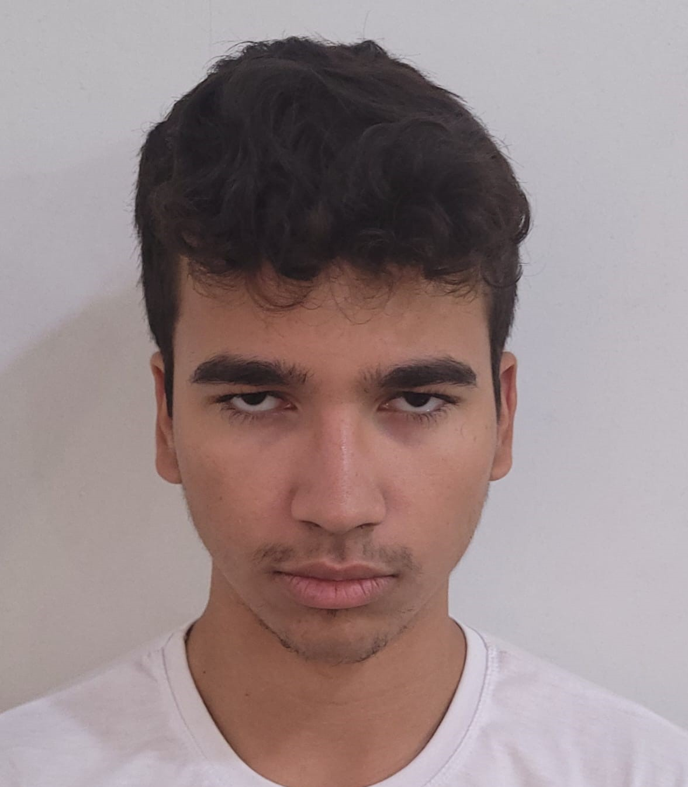
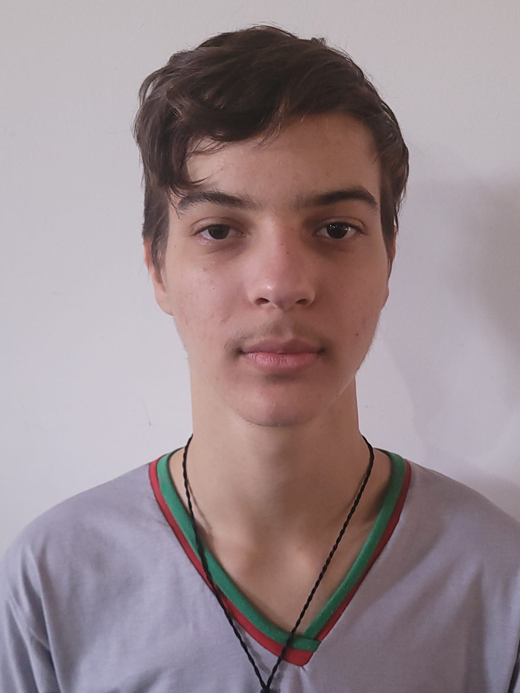
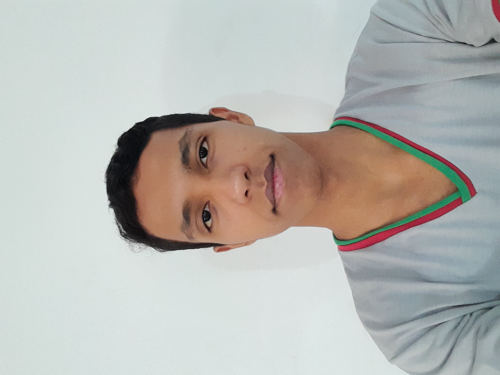

Início
Dados
Impactos
Como Ajudar
Causas
Cards
Nossa Equipe
Conheça os responsáveis por este projeto:
 Arthur Henrique Barbosa Campos
@arthurhenrique2024
 Andrey da Silva Berlanga
@dreyzin_.1
 Lucas Kainã Andrade Ferreira
@lucas.kaina_lk